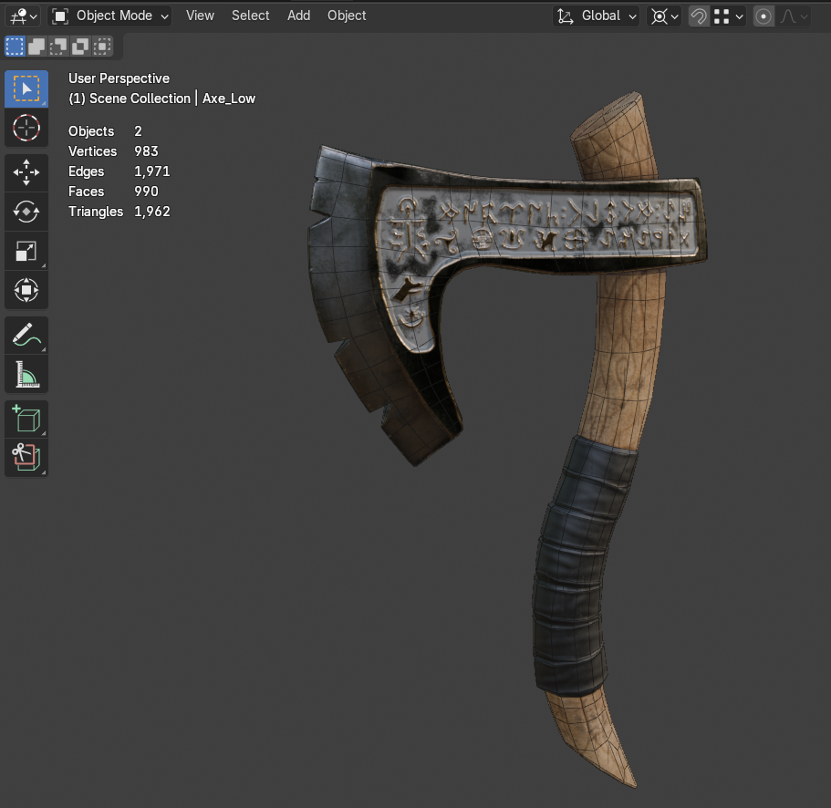
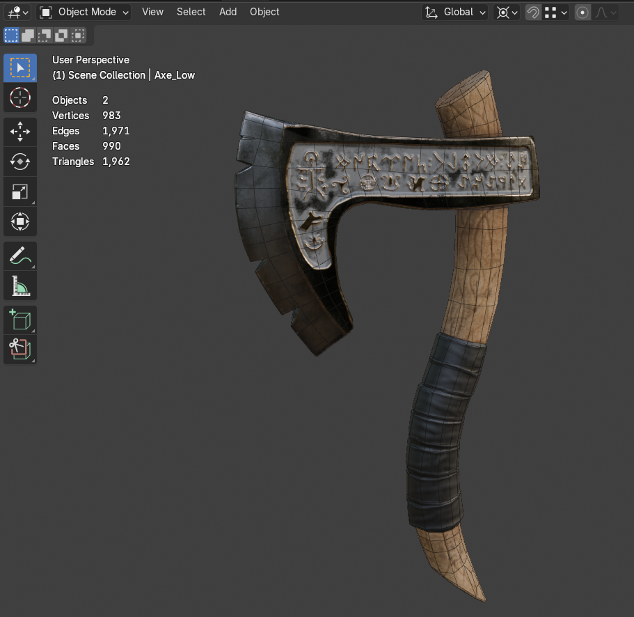
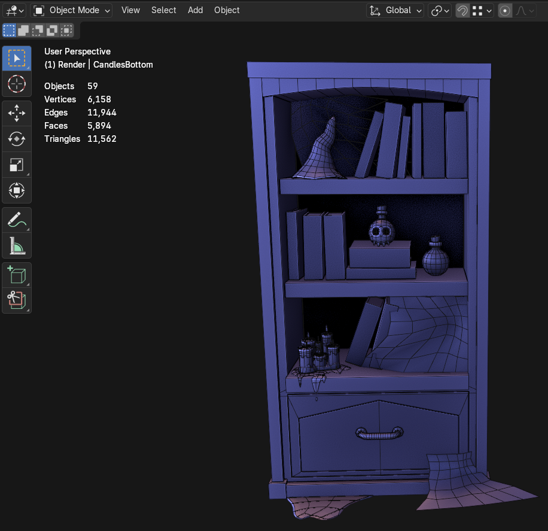
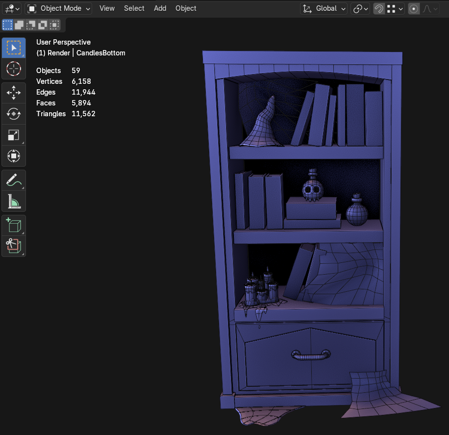

Cold Grave (Oct 2025)
Created for a modeling jam in a week.
- Modeled and textured in Blender
- Sculpted details on jumpsuits and cave are baked to low-poly
- Background is a textured billboard
I started creating 3D art as a side interest, but it quickly became something I wanted to improve at. I am exploring hard surface modeling, sculpting, texturing and procedural materials in Blender and Substance Painter. Currently working on character sculpting and building a small set of game-ready assets to broaden my skills.
These projects help me grow creatively and also complement my technical work in rendering and engine tools. It is giving me a clearer understanding of how artists think, what they need and how engine systems should support them.
• Mail • LinkedIn • Programming Work •
Created for a modeling jam in a week.
Created for a modeling jam in a week.
 

 
